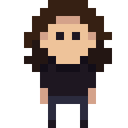

Sync & Ecco
Sync & Ecco, is a top-down asymmetrical 2 player game made with a custom C++ engine. Worked on by a group of 8 being programmed by myself and Tom O'Brien!
Little short video/gif to show off a little of the game here
Although we had quite a bit starting off on the project, with both Tom and I already previously looking into custom engine and learning about graphics, we did not get to start with a fully fledged engine off the get go. Meaning the tools required for the designers and artists did not yet completely exist.
Both Tom and I worked on a multitude of systems, the things that were my responsibility were:
 The dude on right should be replaced with a example of animation blending
- Asset pipeline, The tools for bringing assets into the game.
- Level editor. To allow the designers to create levels.
- Skinned mesh animation, Typical animation support with blending.
- UI, Both the UI for the engine as well as the game.
- Saving and loading, Saving the levels as well as editor settings.
- Particle System, Particles!
- Audio System, For music and audio effects.
- and many more smaller things...
Little short video/gif to show off a some of the aforementioned things
Elaborate on the experience of working on the project